|
 두 부 교
― Tofuism Official Homepage v2.1 ―
★ ★ ★ ★ ★
|
|
|
홈
두부교란?
두부교의 역사
아침 의식 NEW
믿어야 하는 이유
성지순례 (마트)
두부교 찬송가
방명록
오늘의 방문자
000247
총 방문자
014823
현재 접속자
3 명
|
⚠ 이 사이트는 익스플로러 4.0 이상에서 가장 잘 보입니다. 해상도 800×600 권장.
🙏 두부교에 오신 것을 환영합니다 🙏
우리는 믿습니다, 고로 두부는 존재합니다.
■ 두부교란 무엇인가
두부교는 두부를 중심으로 한 신앙 공동체입니다.
굳어진 세상 속에서 부드럽게.. 두부교의 핵심 교리는 단순합니다: 「우리가 믿으므로, 두부는 진리이다.」 두부는 단순한 식품이 아닙니다. 두부는 우리의 삶이며, 우리의 신앙이며, 우리 자신입니다. ■ 아침 의식 안내
매일 아침 신자는 다음의 절차를 따릅니다:
1. 냉장고를 열고 두부신님의 존재를 확인한다 2. 두부신님을 따듯하게 깨운다 3. 두부신님을 입으로 받아들이기 전 두부교 기도문을 낭독한다 4. 아무런 도구를 사용하지 않고 오로지 입 혹은 손으로만 받아들인다. ■ 두부교를 믿어야 하는 이유 TOP 5
1. 두부신님은 배신하지 않는다
2. 딱딱해진 몸과 마음을 부드럽게 해준다 3. 모든것을 부드럽고 유연하게 받아들이게 된다 4. 내가 두부신님이 된다 5. 경계가 흐려진다 ■ 최근 공지
★ NEW
[2026.06.01] 두부교 공식 브이로그 라이브 방송 예정 — 추후 공지
[2026.05.15] 두부교 성지순례 (이마트 행) 무사히 완료됨 [2026.04.30] 교리 3조 개정: "두부는 반드시 신선해야 한다"
방문자 수:
014823
|
|
ⓒ 두부교 All Rights Reserved | 무단 복제 금지 | 최적화: Internet Explorer 4.0+ | Netscape Navigator 3.0+ 최종 업데이트: 2026. 06. 01 | Webmaster: 두부교 홍보부 |
|